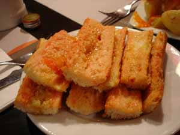

Catalan Tomato Bread
At our first restaurant in Barcelona we ordered something on the menu that I had never heard of, Catalan tomato bread, or pan amb tomàquet. The waiter brought us a dinner plate piled with several slices of slightly toasted white bread, some unpeeled garlic cloves, a couple of whole tomatoes, and a sharp knife. When we just looked at him, baffled, he demonstrated that we were supposed to cut the garlic and tomato in half, rub the garlic over the bread, then squeeze the tomato until it is pulpy and rub that all over the bread as well. Then the whole thing is drizzled with olive oil and sprinkled with a bit of salt.

The Catalans seem to eat this bread for breakfast, lunch, and dinner; I saw the same ingredients laid out on the breakfast buffet here at the parador we are currently staying at in Cardona . Some restaurants bring it to the table already prepared, as in this photo, and quite delicious it is, too.
Comments
I am green with envy, and hope you are having a wonderful time. Bread sounds good-sometimes the simplest things are the best.
This post has made me the hungriest that any post ever has made me.
I’m also at a loss for language. Oh. Yum. Last update from Barcelona was also to die for. Enjoy!
It sounds (and looks) delicious!
Upon starting to drool over that photo, I just realized I haven’t had a good dose of carbs in a few days. Looks delicious!
Add a comment